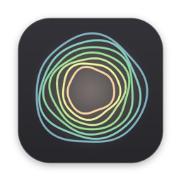

OneAn AI assistant that lives on your Mac and does the errand.
You talk to it. It looks things up, sorts your files, drafts the email, watches a price. It asks before it buys, sends or deletes. No terminal, no setup.
Download for Mac
Free · Apple Silicon Mac · macOS 14 or later
It does the work
Ask for something and it gets on with it in the background, using your own browser, already signed in. You can keep talking while it works.
It asks first
Anything that matters waits for your yes: buying, paying, sending, posting, deleting.
Your memory stays yours
What it learns about you is kept as plain files on your Mac. Switch AIs and it still remembers you.
What you need
- A Mac with Apple Silicon (M1 or newer) on macOS 14 or later.
- An AI plan you already have: ChatGPT, Claude, Grok or OpenRouter. You sign in once, on their own page.
- Your Mac open. If the lid is closed or it's off, so is One. It tells you that up front.
How to start
- 1. Download One and drag it into Applications.
- 2. Open it. It sets itself up and talks you through the rest out loud.
- 3. Ask for something you'd normally do yourself.
Help test it
One is an early test build, and I'm looking for a few people to use it for a week. Tell me what you asked it to do, what broke, and whether you kept using it.
Tell me what broke